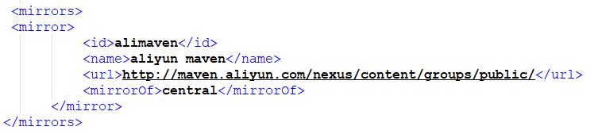

maven 使用 整理
Maven规定的目录结构
maven项目需要遵循一下结构：

Maven的下载与安装
传送门：菜鸟教程
Maven基本命令
1.-v 1: 查询Maven版本
Maven安装完成之后，在命令行输入mvn -v，若出现maven信息，则说明安装成功。
2.compile 2：编译
3.test 3: 测试项目
4.package 4: 打包
5.clean: 删除target文件夹
6.install 5: 安装
Maven仓库
- 本地仓库：maven在本机存储的仓库
- 中央仓库：maven官方提供的远程仓库
当项目编译时，Maven首先从本地仓库中寻找项目所需的Jar包，若本地仓库没有，再到Maven的中央仓库下载所需Jar包。
因为在国内使用maven官方远程仓库下载需要vpn或下载缓慢，推荐配置镜像仓库

Maven坐标
在Maven中，坐标是Jar包的唯一标识，Maven通过坐标在仓库中找到项目所需的Jar包。
如下代码中，groupId和artifactId构成了一个Jar包的坐标。1
2
3
4
5
6<dependency>
<groupId>cn.missbe.web.search</groupId>
<artifactId>resource-search</artifactId>
<packaging>jar</packaging>
<version>1.0-SNAPSHOT</version>
</dependency>
groupId:所需Jar包的项目名
artifactId:所需Jar包的模块名
version:所需Jar包的版本号
gav坐标就是这三。
传递依赖与排除依赖
传递依赖：如果我们的项目引用了一个Jar包，而该Jar包又引用了其他Jar包，那么在默认情况下项目编译时，Maven会把直接引用和简洁引用的Jar包都下载到本地。
排除依赖：如果我们只想下载直接引用的Jar包，那么需要在pom.xml中做如下配置：(将需要排除的Jar包的坐标写在中)
1 | <exclusions> |
依赖范围scope
在项目发布过程中，帮助决定哪些构件被包括进来。欲知详情请参考依赖机制。
- compile ：默认范围，用于编译
- provided：类似于编译，但支持你期待jdk或者容器提供，类似于classpath
- runtime: 在执行时需要使用
- test: 用于test任务时使用
- system: 需要外在提供相应的元素。通过systemPath来取得
- systemPath: 仅用于范围为system。提供相应的路径
- optional: 当项目自身被依赖时，标注依赖是否传递。用于连续依赖时使用
依赖冲突
若项目中多个Jar同时引用了相同的Jar时，会产生依赖冲突，但Maven采用了两种避免冲突的策略，因此在Maven中是不存在依赖冲突的。
最短路径原则
Maven只会引用引用路径最短的Jar。1
2本项目——>A.jar——>B.jar——>X.jar
本项目——>C.jar——>X.jar
直接依赖 > 间接依赖
第一声明者优先
若引用路径长度相同时，在pom.xml中谁先被声明，就使用谁。
可以通过上面的依赖排除来解决依赖冲突
聚合
将多个项目同时运行就称为聚合。
1 | <modules> |
继承
在聚合多个项目时，如果这些被聚合的项目中需要引入相同的Jar，那么可以将这些Jar写入父pom中，各个子项目继承该pom即可。
- 父pom配置：将需要继承的Jar包的坐标放入标签即可。
1 | <dependencyManagement> |
- 子pom配置：
1 | <parent> |
pom.xml详解
1 | <project xmlns="http://maven.apache.org/POM/4.0.0" |
参照：Maven使用详解